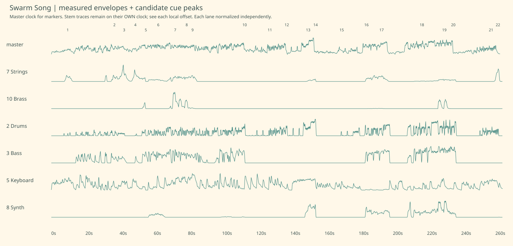

curiosity → swell. candidate; estimated ±250ms. Stem peak 8.95s, local offset 2ms.
Master excerpt starts 5.952s; cue peak is 3.000s into this clip.Signal-derived candidates; emotional roles and agent gestures are proposals. String-stem evidence does not confirm cello. Click a cue to seek the full master video, or listen to its short excerpt.

Stem traces use their original clock; numbered markers use the master clock. Local offsets are listed below. Lane heights are independently normalized.
curiosity → swell. candidate; estimated ±250ms. Stem peak 8.95s, local offset 2ms.
Master excerpt starts 5.952s; cue peak is 3.000s into this clip.connection → swell. candidate; estimated ±250ms. Stem peak 36.40s, local offset -97ms.
Master excerpt starts 33.303s; cue peak is 3.000s into this clip.belonging opens up → swell. candidate; estimated ±250ms. Stem peak 42.15s, local offset -156ms.
Master excerpt starts 38.994s; cue peak is 3.000s into this clip.anticipation → swell. candidate; estimated ±250ms. Stem peak 48.80s, local offset -234ms.
Master excerpt starts 45.566s; cue peak is 3.000s into this clip.celebration → hop. candidate; estimated ±250ms. Stem peak 55.00s, local offset -294ms.
Master excerpt starts 51.706s; cue peak is 3.000s into this clip.playful reply → sway. candidate; estimated ±250ms. Stem peak 62.35s, local offset -351ms.
Master excerpt starts 58.999s; cue peak is 3.000s into this clip.instrumental exuberance → hop. candidate; estimated ±250ms. Stem peak 72.30s, local offset -422ms.
Master excerpt starts 68.878s; cue peak is 3.000s into this clip.playful continuation → hop. candidate; estimated ±250ms. Stem peak 79.10s, local offset -473ms.
Master excerpt starts 75.627s; cue peak is 3.000s into this clip.turn toward the next verse → swell. candidate; estimated ±250ms. Stem peak 82.55s, local offset -502ms.
Master excerpt starts 79.048s; cue peak is 3.000s into this clip.space opens for goodbye → settle. candidate; estimated ±250ms. Stem peak 112.65s, local offset -753ms.
Master excerpt starts 108.897s; cue peak is 3.000s into this clip.tender farewell → sway. uncertain — animation disabled; estimated ±1500ms. Stem peak 128.85s, local offset -2216ms.
Master excerpt starts 123.634s; cue peak is 3.000s into this clip.keep the goodbye moving → settle. candidate; estimated ±250ms. Stem peak 137.55s, local offset -995ms.
Master excerpt starts 133.555s; cue peak is 3.000s into this clip.anticipation returns → swell. uncertain — animation disabled; estimated ±1500ms. Stem peak 149.75s, local offset -662ms.
Master excerpt starts 146.088s; cue peak is 3.000s into this clip.renewed motion → swell. candidate; estimated ±250ms. Stem peak 154.55s, local offset -1131ms.
Master excerpt starts 150.419s; cue peak is 3.000s into this clip.quiet curiosity → sway. candidate; estimated ±250ms. Stem peak 169.95s, local offset -1228ms.
Master excerpt starts 165.722s; cue peak is 3.000s into this clip.recognition → swell. candidate; estimated ±250ms. Stem peak 184.55s, local offset -1330ms.
Master excerpt starts 180.220s; cue peak is 3.000s into this clip.connection across generations → swell. candidate; estimated ±250ms. Stem peak 193.55s, local offset -1484ms.
Master excerpt starts 189.066s; cue peak is 3.000s into this clip.shared joy → hop. uncertain — animation disabled; estimated ±1500ms. Stem peak 215.65s, local offset 30ms.
Master excerpt starts 212.680s; cue peak is 3.000s into this clip.last playful flourish → hop. candidate; estimated ±250ms. Stem peak 230.70s, local offset -1876ms.
Master excerpt starts 225.824s; cue peak is 3.000s into this clip.room for the names → settle. candidate; estimated ±250ms. Stem peak 236.00s, local offset -1938ms.
Master excerpt starts 231.062s; cue peak is 3.000s into this clip.afterglow → sway. uncertain — animation disabled; estimated ±1500ms. Stem peak 258.20s, local offset -2038ms.
Master excerpt starts 253.162s; cue peak is 3.000s into this clip.a warm last breath → swell. candidate; estimated ±250ms. Stem peak 261.70s, local offset -1499ms.
Master excerpt starts 257.201s; cue peak is 3.000s into this clip.